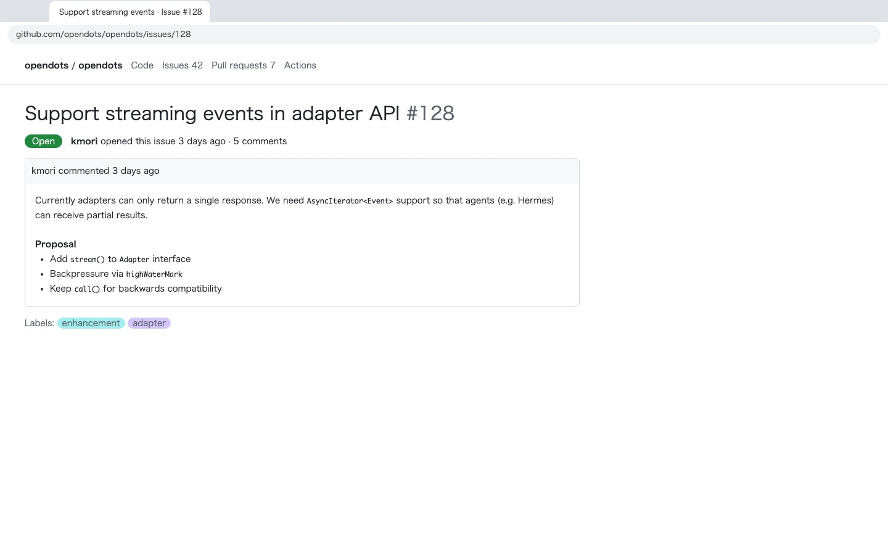
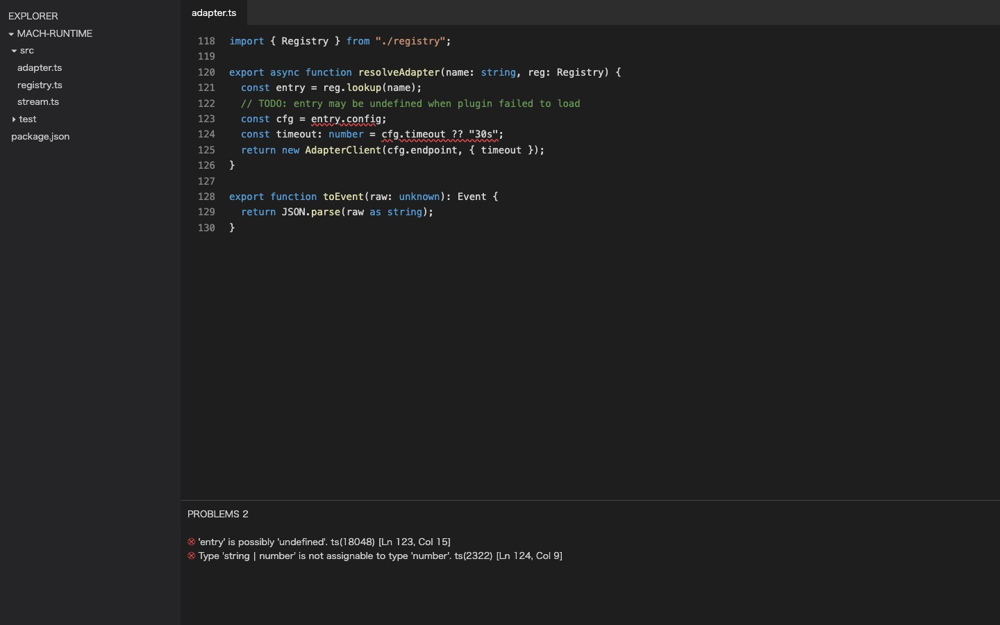
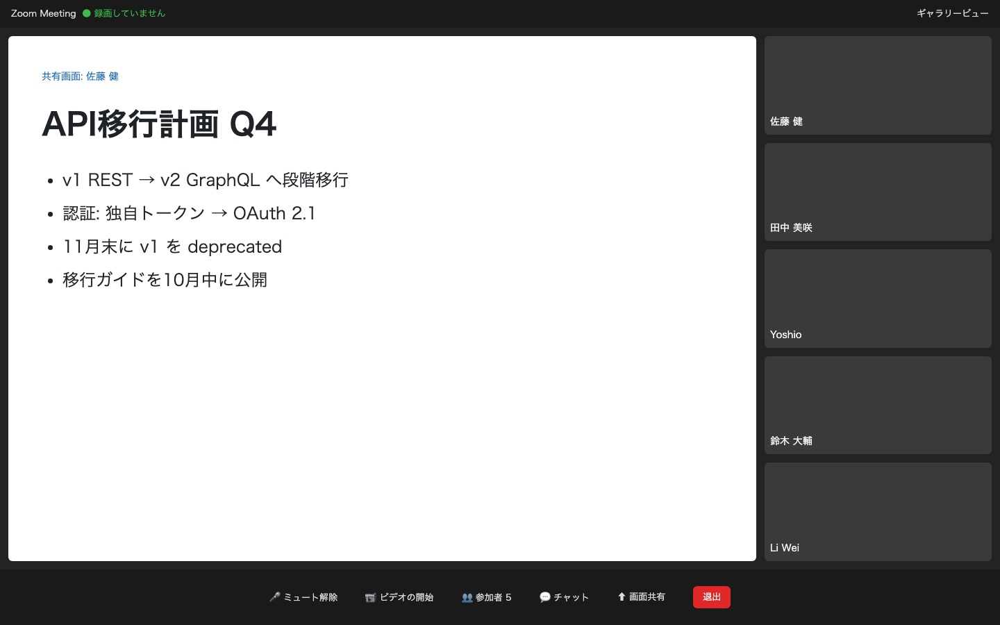
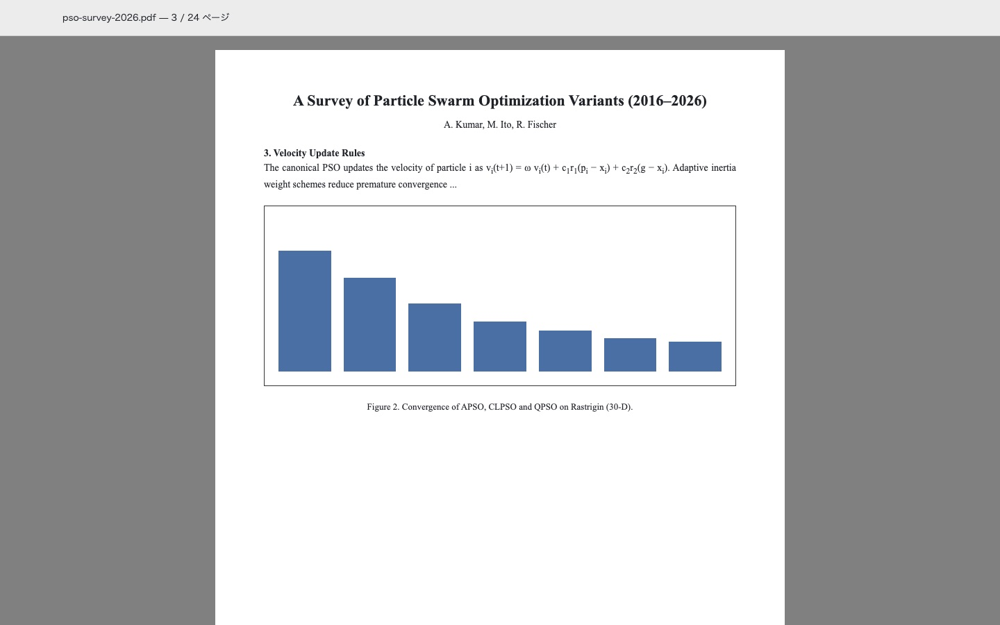
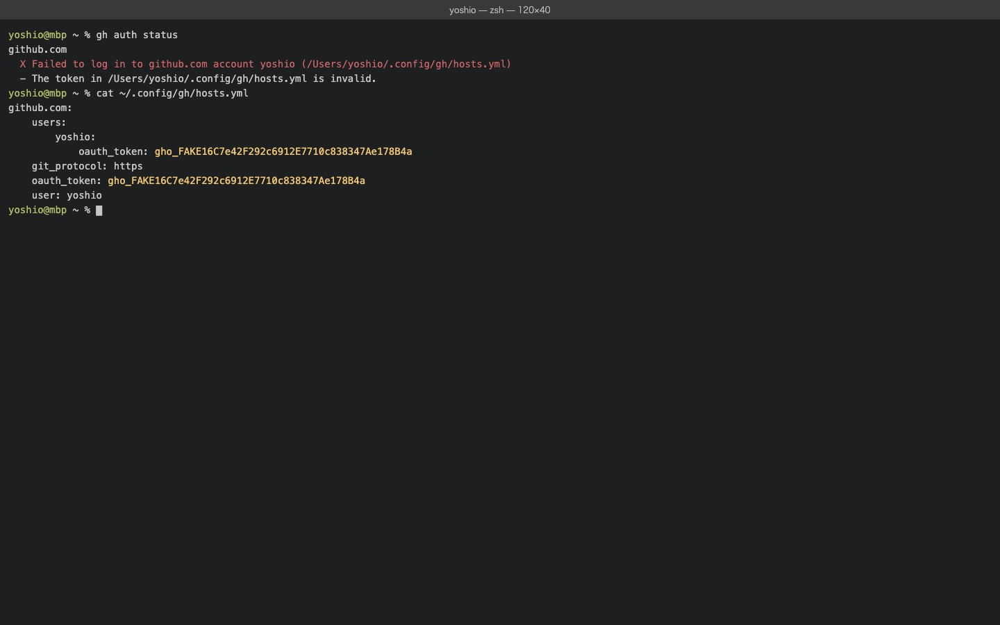

見ている画面に、声でメモを貼る。
⌥Space を押して、ひと言話して、離すだけ。 いま開いているウインドウのスクショ、アプリ名、URL、あなたの一言が 1 件の記録になって Mac の中に残ります。 何をするかは、あとで Claude Code や自作のエージェントに任せられます。

ボタンを長押し（または Space キーを押し続ける）で、録音から保存までを試せます。
1 回押すと、これだけ残ります
入力時に分類も期限も聞きません。あとから読み返したとき、何を見て何を思ったのかが分かる情報だけを自動で集めます。

- 時刻
- 2026-10-08 22:48
- アプリ
- Visual Studio Code
- ウインドウ
- adapter.ts — mach-runtime
- URL
- なし（ブラウザのときだけ取得）
- あなたの一言
- 「ここで null になる理由を調べて直しておいて」
- あとから自動で
- code 意図の推定 ・ 検索用の索引 ・ 秘密情報のチェック
- 押すそのときの画面とアプリ情報を記録し、録音を始めます。
- 話す思ったことをそのまま。「あとで」「これ」で通じます。
- 離す約 1.5 秒で文字起こしして保存。5 秒以内なら取り消せます。
作業を止めずに、その場で
読んでいるとき
「これ Hermes のアダプタに使えそう。あとで実装方法を調べる」
URL ごと残るので、エージェントが元のページを開いて続きを調べられます。

会議の最中に
「今の API 移行の話、認証設計にも関係する。あとで確認」
会議アプリ側がミュートでも、Context Capture はあなたの声を録れます。残すのはあなたの一言と画面だけで、会議の音声は録りません。

資料や論文を読みながら
「この図、実装資料に使えそう」
あとで「収束のグラフが載ってた論文」と探せば、注釈を付け忘れた画面も見た目から見つかります。
判断と実行は、エージェントに
Context Capture はタスク管理をしません。溜まった記録をローカルの MCP サーバーとして公開するので、Claude Code や Hermes から読んで、そのまま作業に移れます。
> 今日 Context Capture に入れた code の件を片付けて
● context-capture.list_inbox(intent="code", since="today")
3 件: adapter.ts の null / 型エラー / #128 のストリーミング対応
● context-capture.get_capture("01JABC…")
VS Code · adapter.ts — mach-runtime · 22:48
「ここで null になる理由を調べて直しておいて」
lookup() が未登録のプラグインで undefined を返すのが原因です。
修正案を出します…list_inbox- 未処理の記録を意図や期間で絞って一覧
search_captures- 自然文で検索（画面の見た目も対象）
get_capture- 1 件の詳細とスクショ
add_note- 調べた結果やリンクを記録に追記
mark_done/archive- 片付いた記録を閉じる
エージェントは記録を削除できません。読み取りと状態の更新だけを許可しています。
手元から出しません
文字起こしも、意図の推定も、検索も、すべてこの Mac の中で動きます。外に出るのは、あなたがエージェントに渡したときだけです。

写ってはいけないものに気づきます
保存したスクショを Mac 上で読み取り、API キー、アクセストークン、表示中のパスワードを見つけると「要確認」を付けます。要確認の画像は、あなたが確認してマスクするまでエージェントに渡りません。
パスワード管理アプリや銀行アプリなど、指定したアプリが前面にあるときはスクショ自体を撮りません。
| 権限 | 何に使うか | 許可しないと |
|---|---|---|
| マイク | 押している間だけ、あなたの声を録る | 使えません |
| 画面収録 | 前面ウインドウを 1 枚だけ撮る（動画は撮りません） | スクショなしで保存します |
| アクセシビリティ | ホットキーと、ウインドウのタイトル取得 | アプリ名だけ保存します |
| オートメーション | ブラウザの URL 取得 | URL なしで保存します |
Apple Silicon の中で動くモデル
M3 / 24GB の MacBook で、日本語の注釈を使って事前検証した数字です。
| 役割 | モデル | 検証結果 |
|---|---|---|
| 文字起こし | Whisper large-v3-turbo | 1 件 1.1 秒。意図の推定と索引まで含めても 1.6 秒（90 パーセンタイル） |
| 意図の推定 | LiquidAI d1-3B | 未見の注釈 22 件中 21 件を正しく分類、1 件 0.3 秒 |
| 検索 | Google EmbeddingGemma 2 | 上位 3 件に正解が入る割合 93%（注釈とスクショを合わせて索引） |
| 秘密情報のチェック | Apple Vision の文字認識 | ダミーのキーやトークンを含む 4 画面すべて検出、誤検知 0 |
検証は合成音声と画面モックで行ったものです。実際の話し方や画面では数字が変わります。検証レポート
よくある質問
タスク管理アプリとは何が違いますか？
Context Capture は記録を残す入口だけを担います。プロジェクト、タグ、優先度、期限の入力欄はありません。整理や実行は、あとから Claude Code やエージェントに任せる前提です。入力に 3 秒以上かからないことを最優先にしています。
音声やスクショはどこかに送信されますか？
送信しません。文字起こし、意図の推定、検索、秘密情報のチェックはすべて Mac の中で動きます。通信するのは、初回にモデルをダウンロードするときだけです。記録がエージェントに渡るのは、あなたが MCP 経由で読ませたときだけです。
どの Mac で使えますか？
Apple Silicon（M1 以降）の Mac と macOS 15 以降が必要です。メモリは 16GB 以上をおすすめします。意図の推定に使うモデルは使うときだけ読み込み、しばらく使わなければ解放します。Intel Mac と Windows には対応していません。
ディスクはどれくらい使いますか？
モデルが合わせて約 9GB です。記録 1 件あたりはスクショ（WebP）が 100〜300KB 程度、テキストはごくわずかです。音声は既定で 7 日後に削除し、文字起こしだけを残します。
オンライン会議の最中に使えますか？相手に聞こえませんか？
使えます。macOS では Zoom・Teams・Meet と同じマイクを同時に使えるので、会議アプリ側をミュートにしたまま Context Capture にだけ話しかけられます。ミュートを解除したまま話すと、その声は相手にも聞こえます。
会議の音声も録音されますか？
録音しません。残すのは、あなたが押している間のあなたの声と、画面のスクショだけです。参加者の同意が関わるため、会議音声の取り込みは今のところ予定していません。
パスワードや API キーが写っていたらどうなりますか？
保存後に画面の文字を Mac 上で読み取り、キーやトークン、表示中のパスワードを見つけると「要確認」を付けます。要確認の画像は、確認してマスクするまでエージェントに渡しません。パスワード管理アプリなど、スクショを撮らないアプリも指定できます。
URL はどのブラウザで取れますか？
Safari、Google Chrome、Arc、Microsoft Edge に対応予定です。それ以外のアプリでは URL なしで、スクショとウインドウのタイトルを保存します。URL が取れなくても記録は必ず残ります。
日本語の聞き取りはどのくらい正確ですか？専門用語は？
検証では文字の誤り率が 7% 程度でした。製品名や社内用語のような固有名詞は間違えやすいので、よく使う言葉を辞書に登録できるようにします。保存後に文字起こしを手で直すこともできます。
「意図」とは何ですか？間違っていたら？
一言の内容から、自分でやること・調べてほしいこと・コードの修正・メモ・予定のどれに近いかを推定したラベルです。自信がないときは「未分類」のままにします。ラベルはいつでも付け替えられ、エージェントが記録を絞り込むときに使います。
Claude Code や Hermes とはどうつなぎますか？
Context Capture がローカルの MCP サーバーになります。Claude Code の MCP 設定に追加すれば、一覧、検索、詳細の取得、追記、完了の 6 つのツールが使えるようになります。記録の削除はエージェントからはできません。
オフラインでも使えますか？
使えます。初回にモデルをダウンロードしたあとは、ネットワークなしで録音から検索まで動きます。
料金はかかりますか？
ベータ期間中は無料です。正式版の価格は、ベータの利用状況を見て決めます。
ベータ版を待っている方へ
最初のベータは、Apple Silicon の Mac で日本語を使う開発者向けに少人数で配布します。